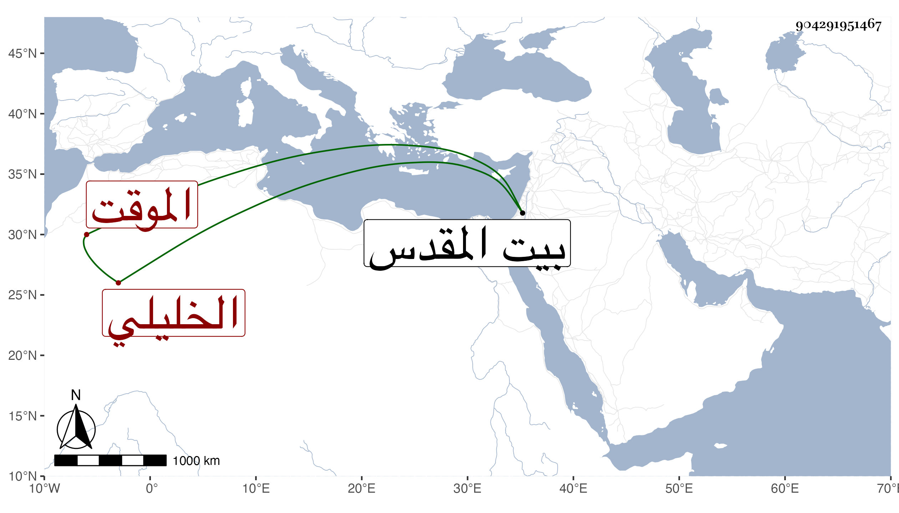

0902Sakhawi.DawLamic.ITO20230111-ara1.EIS1600.904291951467
Biography ID: 904291951467
138
أحمد بن عمر بن إبراهيم بن أبي بكر بن إبراهيم بن أحمد الشهاب الخليلي الموقت حفيد المحدث البرهان القلانسي . ولد في سنة إحدى وعشرين وثمانمائة وسمع على التدمري وإبراهيم بن حجي سمع عليهما بقراءة ابن ناصر الدين في سنة ست وعشرين جزء الحسن بن عرفة بل سمع من لفظ القارئ جزءا من عواليه ثم سمع في كبره على الجمال بن جماعة . وكان خيرا كثير التلاوة والصلاة محبا لطلبة الحديث كتب على استدعاء في سنة تسعين ومات في صبيحة يوم الجمعة سابع عشري ربيع الثاني سنة خمس وتسعين ببيت المقدس وصلى عليه بعد صلاة الجمعة بالأقصى ثم دفن بباب الرحمة رحمه الله وإيانا .
